便民设施：不逛这里，不算来过北京!
来源：北京东城
拥有2100万人口的北京，居住是否舒适，生活是否便利，决定着这座城市的温度与品质。星罗棋布的菜市场，氤氲着市井烟火，将居住在周边的人们连接在一起，悄无声息地构成一个个城市的生活共同体。
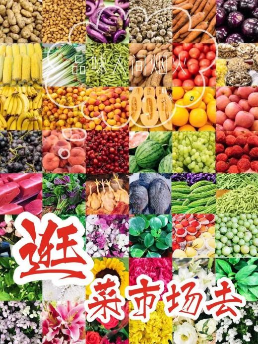近年来，随着“疏解整治促提升”深入推进，北京核心城区利用疏解腾退空间，优先补充商业便民设施。老菜市场升级便民商业服务综合体，菜篮子直通车进社区，国安社区、邮政、便利店卖菜……为了解决老百姓吃菜问题，北京探索出多种多样的新模式。
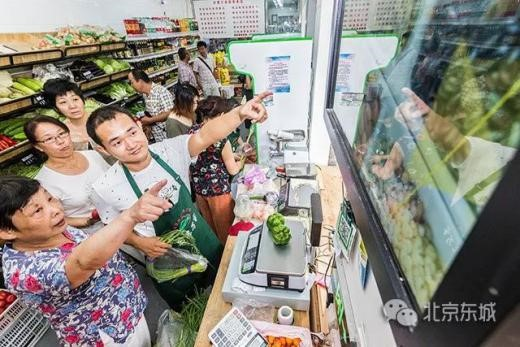据北京市商务局不完全统计，目前全市共有蔬菜零售、便利店等7项基本便民商业网点约4.6万个，其中连锁网点约1.8万个，城六区已实现7项基本便民商业服务功能社区全覆盖。
人间烟火味，最抚凡人心
距离天安门不足四公里，在东四南历史文化街区的胡同之间，有一座面积三千余平方米的菜市场——朝内南小街菜市场。这里，每天都上演着最本真的生活。
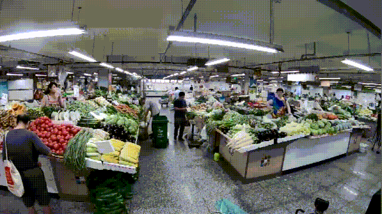一大早，笃信“早市蔬菜新鲜”的人们，拎着菜兜、推着菜车，在门口等待七点开门。熟人聊着天儿，盘算着买什么，今天吃什么。时刻一到，谁也顾不上多聊两句，忙不迭地扎进菜市场。
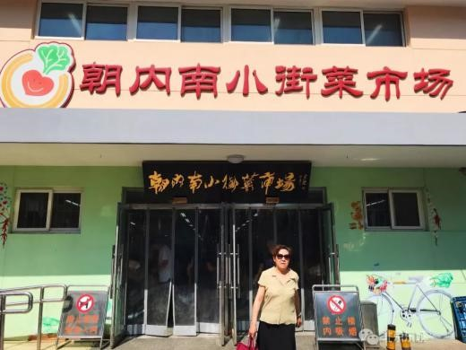掀开门帘儿，里面一片“活色生香”。门口，先是琳琅满目的水果：红的大桃、黄的甜杏、青的香瓜、紫的葡萄……身子还没靠近，空气中一股子甜香味儿就让人挪不动脚。演乐胡同的张大妈却不停脚，悄声儿说，“门口的都贵，里面便宜！”
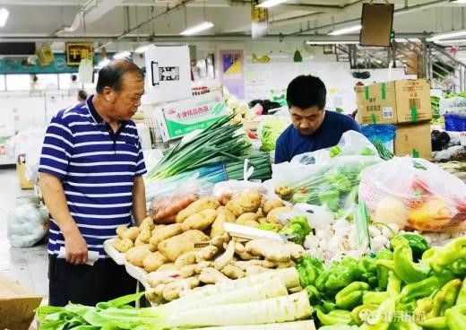往里走，水灵灵的绿叶菜被捆成束，辣椒、萝卜组成五彩斑斓的色块，圆滚滚的土豆、西红柿垒成金字塔状，半开的荷花、鲜绿的莲蓬插在大水瓶里，翠生生的黄瓜和西葫芦之间，杂着白色的菜花……每一个摊位，汇聚着万千生命的鲜活淳朴，呈现在你面前。
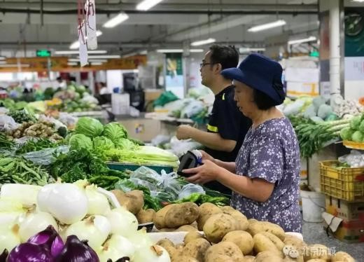张大妈目光如炬，环顾四周，谁家的茄子便宜、谁家的黄瓜新鲜，食材贵、贱、优、劣了然于胸，买什么吃什么运筹帷幄。有时，她顾念着小马家的闺女才刚刚两岁，买一斤菜也差不了几毛钱。
卖菜的小马，精明能干，热情地帮张大妈挑菜、称重，一抓一个准儿，算账、找零，一气呵成。末了，问一句，“您孙子放暑假啦，今天又给他包茴香饺子吃？”张大妈接过菜，不慌不忙地聊起家常来。
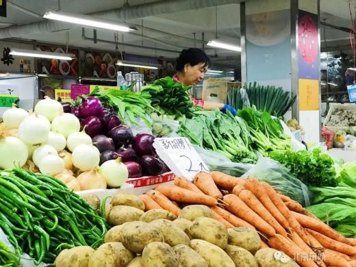菜市场里，人来人往，有拉着小菜车的老年人，也有挎着布兜的年轻人。水果的甜味，蔬菜的泥土味，生鲜肉味，剁肉声，聊天声，浸润其中，每一处都是生动鲜活的真实生活。正如汪曾祺在《人间滋味》里写的：“看看生鸡活鸭、新鲜水灵的瓜菜、彤红的辣椒，热热闹闹，挨挨挤挤，让人感到一种生之乐趣。”
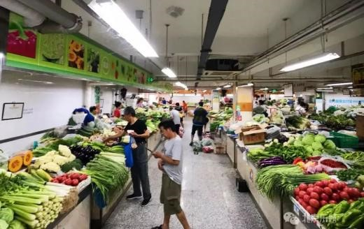朝内南小街菜市场并不用“挨挨挤挤”。里面四米宽的通道，用附近居民的话来说，“都能开小汽车，宽敞！”整洁的水磨大理石地面，显得格外光亮。
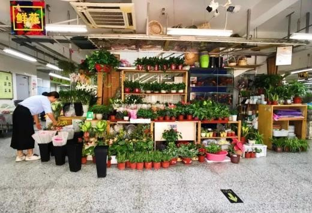百余个摊位上方，都有色彩鲜明的招幌，黄色的水果区、绿色的蔬菜区、蓝色的海鲜区、五颜六色的调料区，井然有序。区域指示牌上写着巧妙的只言片语：“萝卜青菜、各有所爱”“赤橙黄绿青蓝紫、柴米油盐酱醋茶”……
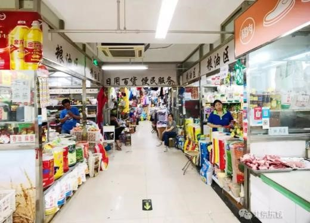从楼梯上二层，服装店、小药铺、日杂店、裁缝铺、维修店，有序分布。生活所需的针头线脑、缝缝补补，吃穿用度的日常，在这里都能找到。
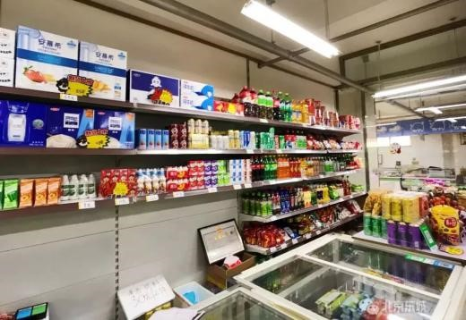人间烟火味，最抚凡人心。城市最深层的肌理，被菜市场横面“切开”，露出柴米油盐的本真，溢满饮食男女的人之常情，让每个浸泡其中的过客感受到滚滚红尘，体验到生之乐趣。
老菜市场变身“生活美学馆”
两年前，朝内南小街菜市场却是另一番模样。
有近20年历史的朝内南小街菜市场，前身是北京电热器厂（现为鑫京热电器有限责任公司）的老厂房，其历史变迁，是城市发展和治理的一个缩影。
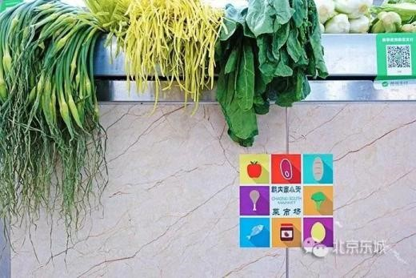1999年，按照北京市政府治理马路市场的要求，东城区与北京电热器厂协商，把闲置的厂房再利用，将附近的南竹竿早市“退路进厅”搬迁过来。
“菜篮子是事关民生的头等大事，当时东城区的领导要求我们用最快的速度建成。”鑫京热副总经理龙汝敏介绍，“我们把老厂房改成菜市场，2000年元旦开张营业，满足了周边居民的吃菜需求。但里面是木质结构，整天为安全问题提心吊胆的。”
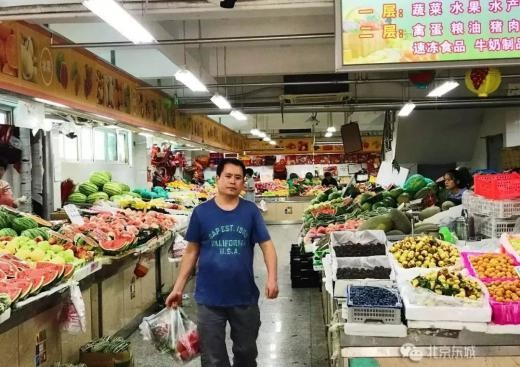2005年，为了迎接奥运会，北京市计划用两年时间对全市150家社区菜市场进行升级改造。“我们第一波儿响应政策，拆了旧厂房，原址上重建了现在的建筑。”龙汝敏骄傲地说，“当时菜市场是第一个安上电视监控系统、广播系统和电脑管理系统的，也是北京市第一批‘规范化菜市场’。”
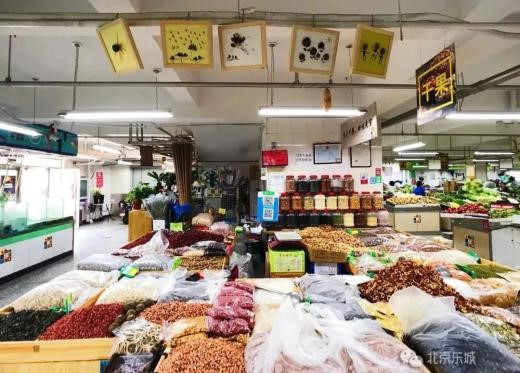随着时间推移，由于经营模式的固化和环境的局限，朝内南小街菜市场也不可避免地变得陈旧而杂乱。“六米高的大厂房，里面就像个大棚，黑乎乎的。”据生活在周边的居民回忆，“菜市场有卖鱼的，地总是湿漉漉的，人多很挤，走路都得小心躲闪，不然就溅上泥汤子。”
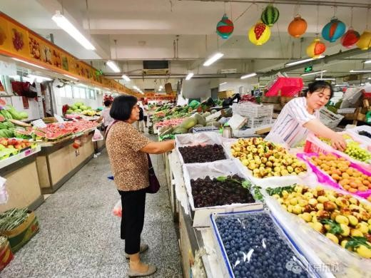2017年3月，北京市出台《关于进一步提升生活性服务业品质的工作方案》的通知，“优化蔬菜零售、便利店（社区超市)、早餐、快递、便民维修、家政服务、美容美发、洗染等基本便民商业服务”被列入工作重点。市发改委发布，从2017年连续3年，每年安排约2亿元市固定资产投资用于补助商业便民服务设施项目，引导、带动更多企业投资商业便民服务设施的建设运营。
“有的街道新建超市，但我们有现成的菜市场，也更有文化底蕴，想把它做出来。”朝阳门街道办事处副主任李哲介绍，在政策的鼓励下，东城区商委和朝阳门街道办事处召开了朝内南小街菜市场升级改造工作研讨会，决定邀请北京城市规划设计研究院、中央美术学院、北京林业大学等专业团队和设计师对其进行改造。
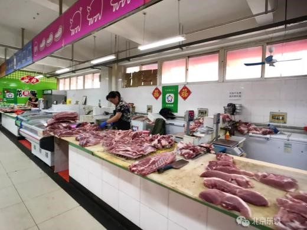历时半年多，朝内南小街菜市场实现了“旧貌换新颜”。
“我们给菜市场‘一键美颜’，重新铺设了地砖，对菜台、灯光、无障碍设施、监控摄像头进行了改造，还增加了缝补、洗染、家政、理发、维修等服务，变成一个实打实的便民服务综合体。”菜市场负责人尤恺介绍，“原来的160个摊位，经过优胜劣汰、合并整合，现在是106个摊位。”
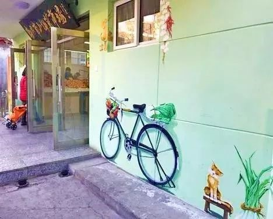菜市场改造后也增添了许多艺术气息。大门口的立面墙上，手绘了一辆二八自行车，车后座捆着一棵大白菜，车筐里装着萝卜、茄子、土豆，勾起人们凭票买菜的记忆。“我们多方组成设计团队邀请摊主们一起设计，手绘小灯笼、制作水果表情包，还用蔬菜扎了花环、手捧花，每个人脸上都洋溢着微笑。”北京城市规划设计研究院设计师刘静怡说，“住在史家胡同的张迎星老师主动给菜市场画了三十多张速写，每张都有他的老熟人儿，菜市场已经深深印在他脑海里了。”
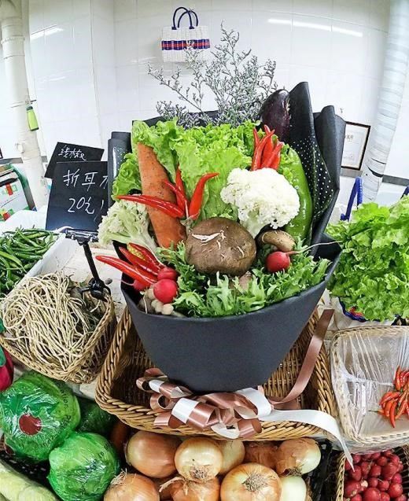“黑乎乎的”老菜市场摇身变为“生活美学馆”。设计师团队还借鉴国外菜市场的经验，举办菜市场博物馆、菜市场课堂city walk等活动，吸引了越来越多的年轻人来“打卡”。
4.6万个便民商业网点遍布全市
“旧貌换新颜”是城市更新的一种方式。在当下城市高质量发展的关键期，如何满足更多人的需求，北京做了更多的探索。
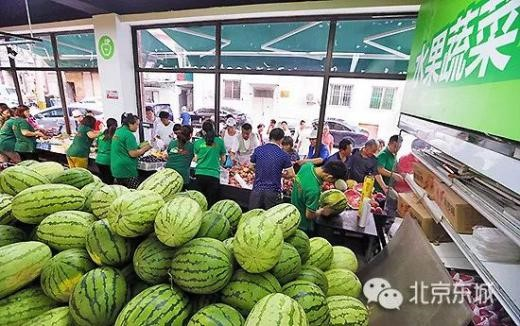北京交通大学建筑与艺术学院副教授盛强，2005年，他做北京旧城商业分布的博士研究时，曾走路、骑车“地毯式”调研三环内菜市场的变迁。
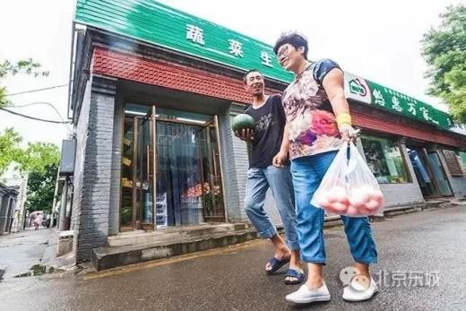经过几年持续追踪，他发现2005年至2009年，北京三环路内五个摊位及以上规模的菜市场有43个消失，新开业46个。消失的菜市场中有3个被成功升级为超市，23个因城市开发被拆除，其余转为其他城市功能。变化趋势是，批发型的大型菜市场逐渐从中心城区外移，中级别菜市场呈现出动态的稳定性，小菜市场则比较复杂。
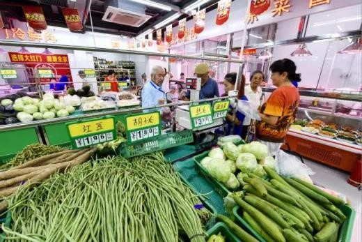“菜市场是由需求决定的。随着市民消费能力和生活品质的提升，对社区及商业的需求进一步增长，具有价格和商品种类优势的大中型市场吸引力便降低了，菜市场随之走向小型化、碎片化。”盛强说。
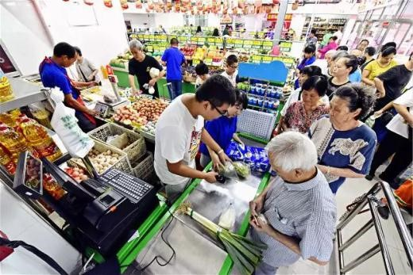随着“疏解整治促提升”的深入推进，北京核心城区利用疏解腾退空间，不断补充商业便民设施。集蔬果销售、理发、家政、维修、小物超市等内容于一身的便民商业服务综合体在老城区频繁亮相；地下微仓储、共享洗衣、智能自提柜等新型服务设施，也在社区紧锣密鼓地布点。
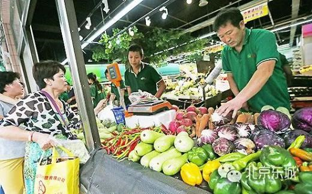在东城区，“悠惠万家”连锁化菜站整合了各类菜摊、主食厨房、便民服务，近两年间部署开来。“这里除了能购买油盐酱醋、生鲜果蔬，还有修表的、修拉链的、改衣服的、修鞋的、配钥匙的，可谓麻雀虽小五脏俱全。”悠惠万家珠市口东大街店负责人告诉记者，“价格方面，我们开发了实时监测系统。比如百姓常吃的黄瓜、西红柿等蔬菜，如果价格超出市场和政府主管部门掌握的价格区间，就会发出菜价报警信息，让主管部门能在价格异常波动时期，通过加大市场供应、投放储备等措施平抑物价。”
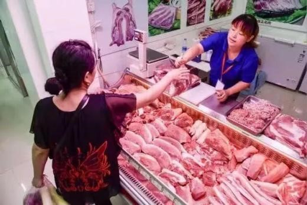今年，东城区还出台了生活性服务业设施规划，依照常住人口规模和居民业态需求确定生活性服务业的规模数量和品质指标，绘制便民商业网点建设作战点位图，与街区更新工作无缝对接，实现“叠图作战”。
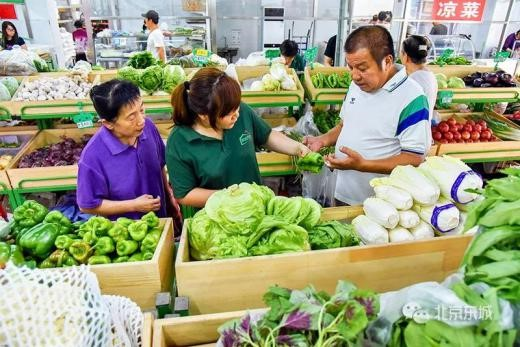生鲜超市卖菜、“净菜”进便利店、蔬菜直通车进社区……居民买菜的渠道一天天丰富起来，出门不到十五分钟，就能买菜、理发、缝补改衣。据统计，东城区17个街道今年新增各类生活性服务业功能网点293个，东花市、交道口、朝阳门等街道已提前完成一个社区两个蔬菜零售网点的任务。
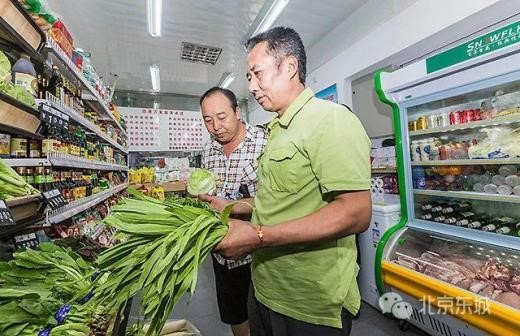北京城里，多种多样的便民网点正如雨后春笋般纷纷冒出。
据北京市商务局统计，去年，全市共建设提升蔬菜零售、便利店等7项基本便民商业网点1529个，其中拥有蔬菜零售功能的网点667个、便利店468个、家政等其他网点339个。目前，全市共有蔬菜零售、便利店等7项基本便民商业网点约4.6万个，其中连锁网点约1.8万个，城六区已实现7项基本便民商业服务功能社区全覆盖。
提升活力的他山之石
全覆盖、多层级的便民商业服务体系，为生活在北京的人带来更多便利。但随着人们生活水平逐步提高，新的问题随之而来。
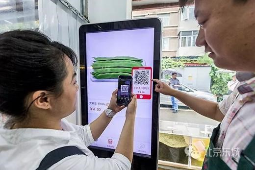针对大城市在菜市场转型过程中遇到的规划、设计问题，清华大学建筑学院副教授陈宇琳，近些年考察研究了香港、台湾、新加坡的菜市场，总结这三地菜市场的经营模式。她建议，在城市规划中划定菜市场专门用地，依据居民需求确定菜市场设置标准，并综合考虑商贩的安置。“比如，台湾明确了传统零售市场的公共属性，并设置专门的用地类型，保障了足量实体空间的供应。菜市场到底怎么建、用地性质是什么、适用何种管理机制等，需要通过制度解决。”陈宇琳说。
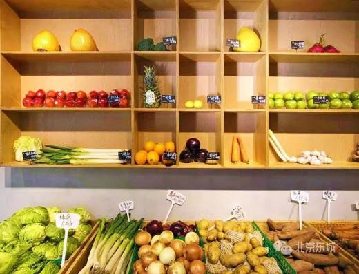此外，在建筑设计上，“功能混合是提升活力、节约用地的绝佳选择，市政办公、社区康乐、公共图书馆等都可以与菜市场结合。”陈宇琳建议，将菜市场与社区中心等多种功能组合，提高土地利用效率。在管理机制上，对作为公共服务配套的菜市场，建议政府发挥主导作用，适当管控企业逐利导致的租金和菜价上涨。
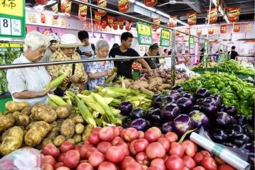北京城在更新，菜市场也像这座城市的其它空间和空间中的人一样，日新月异的变化。无论是老菜市场的改造升级，还是便民服务网点的遍地开花，建设和谐宜居现代化城市的探索仍在路上。